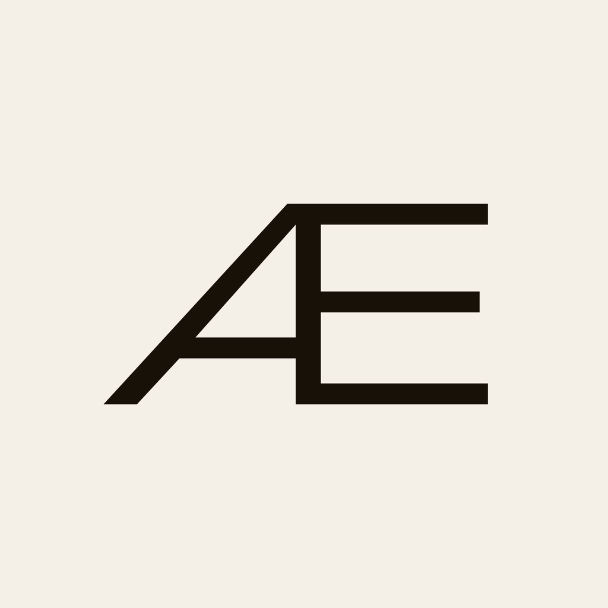

O nome é Aeternum; a marca é o Æ — a ligadura do Michroma, a fonte da palavra-marca. O monograma canônico é branco sobre midnight; o ícone do app é a inversa (Æ midnight sobre branco). O ícone é literalmente o começo de "ÆTERNUM": mesmo glifo, mesma fonte. (Rev 4: aprovada a referência do Leo — palavra-marca em Michroma com Æ bronze + TTERNUM branco; monograma Æ branco; ícone na inversa.)
Aeternum já era o nome travado do sistema (spec v1, design inputs —
o mesmo nome do vault). O que estava aberto não era qual nome, e sim
como ele aparece: o app.json ainda exibe o nome de trabalho
"escritório", e não existia forma gráfica do nome nem símbolo.
Três decisões fecham a questão:
| Decisão | Forma | Por quê |
|---|---|---|
| Nome de exibição do app | Aeternum | Um sistema, uma só memória de vida — o app é a superfície primária do Aeternum, não um produto separado. "escritório" aposenta. |
| Palavra-marca (forma gráfica) | ÆTERNUM — Michroma, Æ em bronze + TTERNUM em branco | Michroma é a fonte própria da marca (larga, geométrica, noturna — combina com o midnight desk). A ligadura Æ é a abertura da palavra e vira o monograma: ícone e palavra-marca são o mesmo glifo. No texto corrido e na UI do app continua "Aeternum"; o Æ e o Michroma são a forma desenhada — as fontes de interface (Syne/Bricolage) não mudam. |
| Tagline (opcional, raro uso) | Nada se perde. | A promessa do sistema em três palavras — é a lei nº 1 ("vazão antes de captura: nada some sem destino") dita de trás pra frente. Não é marketing; é o contrato. Candidatas descartadas: "O dia que fecha" (só fala do rito), "Tudo reaparece" (passivo demais). |
Colisão conhecida: existe a AeternumFintech (ConsigVerse), fora de escopo. Contextos separados, sem confusão prática — e o monograma Æ diferencia esta marca da outra sem trocar o nome.
Várias direções foram desenhadas dentro do sistema "midnight desk". A revisão de 2026-08-09 cravou a referência final: a ligadura Æ do Michroma — o começo literal da palavra-marca — com o monograma em branco.
A ligadura Æ do Michroma — o glifo real, extraído da TTF, não um desenho inspirado nele. O A perde a perna direita para a haste vertical do E; o travessão do A encontra a barra do meio do E. Em branco sobre midnight: máximo contraste, lê a qualquer tamanho, e o bronze fica reservado ao Æ da palavra-marca e à ação primária.
O círculo quase fechado com o ponto marcando o fechamento: o loop capturar → triar → executar → refletir, o dia que fecha às 21h. Honesto e legível, mas genérico como ícone. Fica como marca cerimonial (telas de fechamento de ciclo, review anual) — nunca como ícone do app.
Três tentativas anteriores falharam pelo mesmo motivo: eram desenhos de AE, não o AE da palavra-marca. A rev 4 fecha isso extraindo o glifo da própria fonte da marca. Registradas só para memória de projeto; não usar.
gerar-marca.py.A marca é extraída, não desenhada: o contorno do
Æ sai da própria TTF (Michroma-Regular.ttf,
licença OFL — arquivo e licença em design/). Caixa de tinta
2944×1536 unidades de fonte. O gerar-marca.py regenera SVGs e
PNGs a partir da fonte: se um dia a fonte da marca mudar, a marca muda junto,
rerodando o script. Área de proteção: a altura do travessão do A em volta do
glifo.
Canônica: branco #F4EFE7
sobre midnight #0C0F13 — o "texto" do tema. Na palavra-marca, o
Æ é bronze #DEB878 e o TTERNUM branco; fora dela, o monograma é
sempre branco. O ícone do app é a inversa: Æ midnight
#181108 sobre branco #F4EFE7 — escolha do Leo na
revisão. Nunca usar cor de área de vida no monograma.
O ícone do app renderizado nos tamanhos em que ele aparece no aparelho — da gaveta ao ícone de notificação.

96 · gavetaNo ícone de notificação do Android (monocromático por exigência do sistema) a silhueta do Æ já é a forma certa: traços largos e abertos, leitura limpa a 24px.
Na gaveta, a inversa faz o contrário dos vizinhos escuros: o tile claro com o Æ midnight chama o olho sem gritar — e o nome embaixo é finalmente o nome de verdade.
Para cabeçalhos fora do app: dashboard
publicável, documentos, o README do vault. (Asset: aeternum-wordmark.svg /
.png.)

app.json →
"name": "Aeternum" (hoje "escritório"). Slug e package ficam —
são identificadores técnicos, não marca.app/assets/ com
icon.png, adaptive-icon.png (foreground Æ midnight
+ background #F4EFE7) e splash-icon.png (Æ branco,
fundo #080A0D), referenciados no app.json.#080A0D, monograma Æ branco
centrado — sem texto (a tagline mora na proposta, não no boot do app).Michroma-Regular.ttf no app
via expo-font se a palavra-marca aparecer como texto dentro da UI (ex.: tela
de Ajustes); caso contrário, usar os assets.